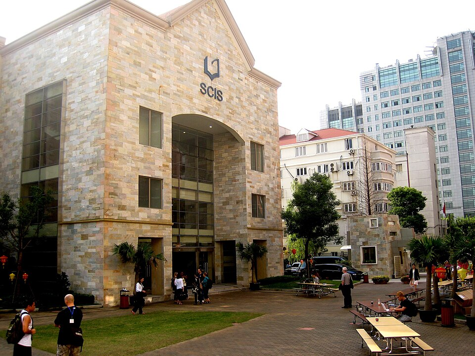

SCIS 상하이 캠퍼스 건물 · 사진: cogdogblog / Wikimedia Commons, CC0
SCIS 상하이(Shanghai Community International School) — 중국 국제학교는 "자격"부터 확인해야 합니다
1. 어떤 학교인가
· 개교 — 1996년, 상하이의 초기 국제학교 중 하나로 문을 연 것으로 알려져 있습니다. 창닝(長寧)구의 작은 단일 캠퍼스에서 시작한 것으로 학교가 소개하고 있습니다.
· 캠퍼스 — 현재 훙차오(虹橋)와 푸동(浦東)에 캠퍼스를 두고 있으며, 캠퍼스마다 받는 연령대가 다릅니다. 훙차오는 유아 과정과 본교 과정이 나뉘어 있고, 푸동은 유아 과정부터 고등까지 한 캠퍼스에서 운영되는 것으로 안내되고 있습니다.
· 교육과정 — IB 연속 과정(Continuum) 학교로, PYP(초등) · MYP(중등) · DP(디플로마)가 한 흐름으로 이어지는 구조로 알려져 있습니다.
· 인증 — 2001년 미국 서부지역학교연합(WASC) 인증을 받은 것으로 안내되고 있습니다.
※ 학비·정원·재학생 수·합격률처럼 해마다 바뀌는 수치는 이 글에서 다루지 않습니다. 캠퍼스별 학년 구성도 바뀔 수 있으니 학교 요강을 직접 확인하세요.
2. 핵심 — 중국 국제학교의 "입학 자격"이라는 관문
상하이에서 학교를 고르실 때 커리큘럼보다 먼저 확인하셔야 하는 것이 있습니다. 우리 아이가 그 학교에 등록할 자격이 되는가입니다.
중국 본토에서 이런 학교들은 외국 국적 자녀를 위한 학교(외적인원자녀학교)라는 별도 범주로 인가를 받아 운영됩니다. 그래서 학교가 마음대로 누구나 받을 수 있는 구조가 아니고, 상하이시 교육 당국이 정한 자격 범위 안에서만 등록을 받는다고 학교들이 안내하고 있습니다. SCIS도 자격을 몇 가지 유형으로 나누어 안내하는 것으로 알려져 있습니다.
| 유형 | 누구인가 | 한국 가정에 해당하는 경우 |
|---|---|---|
| 외국 국적 자녀 | 외국 여권을 가진 학생 | 대부분의 한국 주재원 가정이 여기에 해당합니다 |
| 해외 출생 증명 등 | 중국 국적 부모의 자녀 중 해외 출생 증명 등 일정 요건을 갖춘 경우 | 해당 없는 경우가 대부분입니다 |
| 홍콩·마카오·대만 관련 | 홍콩·마카오·대만 거주자의 자녀 등 | 해당 없는 경우가 대부분입니다 |
⚠️ 위 구분은 구조를 이해하시라고 크게 나눈 것입니다. 실제 유형의 이름·세부 조건·필요한 증빙은 학교마다, 그리고 해마다 달라집니다. 지원 전에 반드시 해당 학교 입학처의 올해 안내를 직접 확인하세요. 이 글의 내용으로 자격을 판단하지 마시기 바랍니다.
실무적으로 한국 가정이 챙기시게 되는 것은 대체로 학생·부모의 여권 사본, 출생 증명, 중국 내 체류 관련 서류, 예방접종 기록, 이전 학교의 성적 기록입니다. 여기서 부모님들이 가장 자주 놓치시는 것이 이전 학교 성적 기록입니다. 한국 학교에서 받아야 할 서류는 출국 전에 챙기셔야 나중에 훨씬 수월합니다. → 편입·전학 총정리
3. 상하이 다섯 학교 비교 — 계열이 다 다릅니다
상하이는 학교 수가 많고 계열이 제각각이라 처음 보면 정리가 잘 안 됩니다. 이 사이트에 개별 가이드가 모인 다섯 곳을 옆에 놓고 보시면 자리가 잡힙니다.
| 항목 | SCIS | 상하이 아메리칸(SAS) | 콘코디아 | 덜위치 칼리지 | NAIS 푸동 |
|---|---|---|---|---|---|
| 계열 | IB 연속 과정 | 미국식 | 미국식 | 영국계 | 영국식 → IB |
| 마무리 과정 | IB 디플로마 | AP·IB 선택 | 미국식 졸업장 + AP | IGCSE → IB | IGCSE → IB |
| 초등 성격 | PYP(탐구 단원) | 미국식 학년제 | 미국식 학년제 | 영국식 Year | 영국식 Year |
| 자세히 | 이 글 | SAS 상하이 가이드 | 콘코디아 가이드 | 덜위치 상하이 가이드 | BISS·NAIS 가이드 |
※ 각 학교의 개설 과정은 바뀔 수 있습니다. 지원 전 학교 요강을 직접 확인하세요.
상하이에서는 황푸강이 생활권을 가릅니다. 집이 강 서쪽(푸시)에 잡히면 훙차오 방향이, 강 동쪽(푸동)에 잡히면 푸동 방향이 현실적인 후보가 됩니다. 이 점은 BISS 푸시·NAIS 푸동 가이드에 더 자세히 정리해 두었고, 상하이 전반의 사정은 상하이 국제학교 과외에 있습니다.
4. 한국(주재원) 학생·학부모가 겪는 어려움
· 학교를 먼저 고르고 자격을 나중에 본다. 순서가 거꾸로면 시간을 크게 잃습니다. 자격 → 캠퍼스 위치 → 커리큘럼 순으로 좁히시는 편이 빠릅니다.
· 서류를 출국 후에 준비한다. 한국 학교의 성적 기록·재학 증명은 한국에서 떠나기 전에 받아 두는 편이 훨씬 수월합니다.
· PYP에서는 진도가 보이지 않는다. IB 초등은 단원별 진도표 대신 탐구 단원으로 굴러갑니다. 아이가 뭘 배우는지 잡기 어려워 문제가 늦게 발견됩니다. → 학습 플랫폼·시간표 읽는 법
· MYP에서 점수가 기준표로 바뀐다. 답을 맞혔는데 점수가 낮은 일이 반복되면 아이가 먼저 지칩니다. 기준표의 항목을 부모님이 같이 읽어 주셔야 합니다. → 성적표 읽는 법
· 수학은 계산이 아니라 용어와 서술에서 막힌다. 한국에서 이미 배운 단원인데 알지브라·지오메트리 용어가 영어라 못 푸는 경우가 흔합니다.
· 중국어까지 얹힌다. 상하이 학교는 대개 중국어를 정규로 배웁니다. 영어·수학이 흔들리는 시기에 중국어까지 겹치면 아이가 힘들어집니다. 무엇을 먼저 잡을지 순서를 정해 주셔야 합니다. → EAL(영어 지원 프로그램) · Learning Support
5. 그래서 이렇게 준비합니다
🧭 먼저 — 자격과 서류를 한 장에 적는다
종이 한 장에 ① 아이 여권 국적 ② 집이 잡힐 지역(강 동쪽인지 서쪽인지) ③ 한국에서 받아 와야 할 서류 세 줄만 적어 보세요. 이 한 장이 있으면 학교 입학처에 무엇을 물어야 할지가 분명해집니다. → 오픈데이·학교 방문 준비법 · 국제학교 입학 준비 총정리
📖 영어과외 — 회화가 아니라 "기준표를 읽는 영어"
IB에서 점수를 가르는 것은 지시어입니다. describe·explain·evaluate·justify 가 각각 무엇을 요구하는지 모르면 내용을 알아도 항목 점수를 못 받습니다. 아이의 실제 과제와 학교가 준 기준표를 나란히 놓고 한 항목씩 맞춰 보는 연습부터 합니다. (영어 공부법 참고)
📐 수학과외 — 아는 개념에 영어 용어를 다시 붙인다
한국식 풀이를 버리지 않고 그 위에 영어 용어와 영어로 쓴 풀이 과정을 얹습니다. DP 수학은 AA·AI 두 갈래라 선택 자체가 성적을 좌우하므로 G10 안에 방향을 잡는 편이 좋습니다. (IB DP 점수 완전정복 · 알지브라 공부법 참고)
📝 편입이라면 — 첫 학기를 적응기로 잡아 둔다
MYP 중간 학년 편입은 기준표 채점이 처음이라 한 학기가 통째로 적응기로 지나가기 쉽습니다. 이 시기를 미리 계산에 넣어 두시면 성적표를 보고 놀라실 일이 줄어듭니다. → 편입·전학 총정리 · 첫 학기 적응 수기
6. 상하이의 강점 — 시차 한 시간의 화상과외
상하이는 한국보다 한 시간 느립니다. 상하이 오후 4시가 한국 오후 5시라, 아이의 방과 후 시간이 한국 강사진의 수업 시간과 거의 그대로 맞습니다. 시간을 맞추느라 애쓸 일이 거의 없는 도시입니다. 다만 중국은 인터넷 환경이 한국과 다르므로, 첫 수업 전에 접속 방식을 한 번 점검해 두시면 수업 중에 끊겨 시간을 버리는 일을 줄일 수 있습니다. 아이의 실제 과제와 학교가 준 기준표를 화면에 놓고 "어느 항목에서 깎였는지"부터 확인하는 방식이 가장 빠릅니다. 상하이 지역 사정은 상하이 국제학교 과외에 정리해 두었습니다.
정리
SCIS 상하이는 1996년 개교로 알려진 IB 연속 과정 학교이고, 훙차오·푸동에 캠퍼스를 두고 있으며 캠퍼스마다 받는 연령대가 다릅니다. 그런데 이 학교를 포함해 중국 본토의 국제학교를 보실 때 가장 먼저 확인하실 것은 커리큘럼이 아니라 등록 자격입니다. 자격이 정리되면 그다음은 단순합니다. 집이 강 어느 쪽인가, 그리고 아이에게 IB 흐름이 맞는가. 30분 무료 상담으로 우리 아이가 지금 어느 구간에 있는지부터 함께 짚어 보세요.